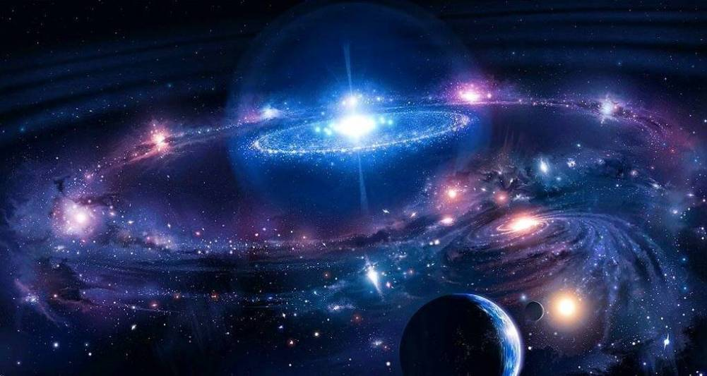
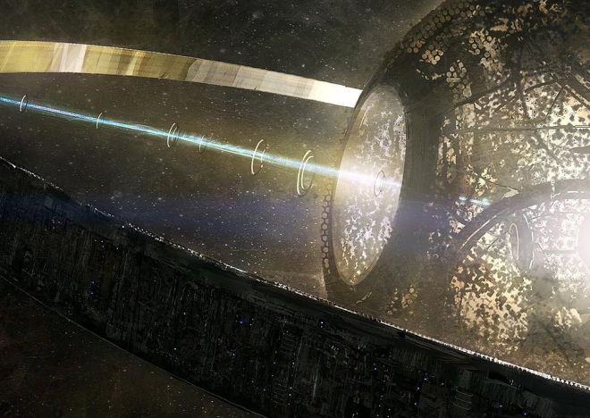
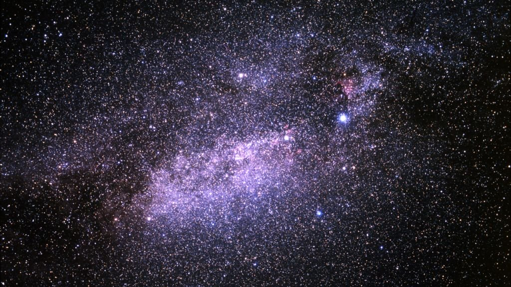
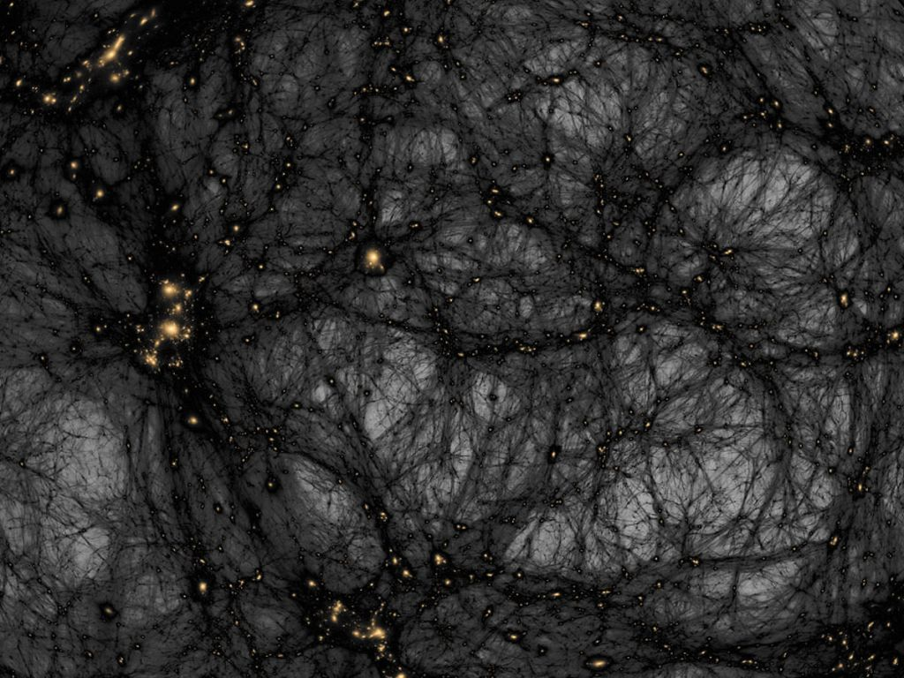
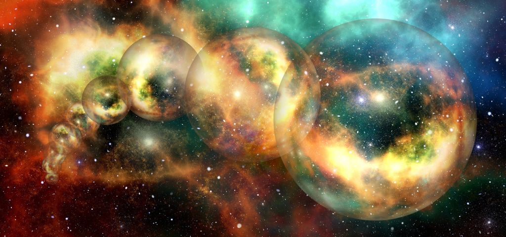

O universo é tudo o que existe. O espaço, o tempo e todas as mais variadas formas de matéria... sempre há algo novo para
descobrir e essa é uma das coisas que torna a astronomia tão fascinante. Telescópios cada vez mais poderosos
fazem novas descobertas a todo instante, buscando responder as maiores perguntas dos astrônomos.
No entanto, às vezes novas descobertas significam novas perguntas, algumas delas desconcertantes. Não é raro um novo objeto detectado colocar em xeque o que se sabe sobre a física do universo.
E com alguma frequência são encontradas algumas coisas tão estranhas e misteriosas que desafiam os cientistas de todo o mundo.
Selecionamos então alguns desses mistérios, além de fatos e curiosidades interessantes sobre o cosmos, e listamos abaixo:
O gigante impossível

A Via Láctea é bem grande. Ela tem cem mil anos-luz de diâmetro, ou seja, se viajássemos em um veículo de ficção científica na velocidade da luz, levaríamos cem mil anos para percorrer nossa galáxia.
Agora imagine a LQG, que tem quatro bilhões de anos-luz de diâmetro! Trata-se de uma estrutura formada por setenta e quatro quasares, e ela quebra as regras da astrofísica - o tamanho máximo de qualquer estrutura cósmica deve ser
de apenas 1,2 bilhões de anos-luz. Os cientistas não fazem ideia de como a LQG se formou.
O maior reservatório de água do universo
Engana-se quem pensa que o planeta Terra é o lugar onde há mais água. A 12 bilhões de anos-luz de distância, está o maior reservatório do universo - no centro de um quasar. Ele tem 140 trilhões de vezes a quantidade de água
nos oceanos de nosso planeta. Porém, por estar perto de um buraco negro colossal,
a água se manifesta na forma de uma enorme nuvem com centenas de anos-luz de diâmetro.
A maior corrente elétrica existente
Provavelmente gerada em um enorme buraco negro, essa corrente elétrica
de proporções literalmente cósmicas possui um exa-Ampère - o equivalente
a um trilhão de raios juntos. Aparentemente, ela é transportada por um
jato cósmico a dois bilhões de anos-luz de distância da Terra.
Framboesa e rum no centro da galáxia
No centro da Via Láctea há uma nuvem de poeira chamada Sagittarius B2. Ela é composta de bilhões de
litros de álcool que flutuam por lá, e também por moléculas de metanoato de etila. Considerando esses
componentes, é possível que se visitássemos a região sentiríamos cheiro de rum e gosto de framboesa.
Partículas-fantasma
Neutrinos são um tipo de partícula subatômica elementar - ou seja, não existe partes menores dentro deles -
e são semelhantes aos elétrons, exceto pelo fato de que os neutrinos não têm carga elétrica e são 6 milhões
de vezes mais leves do que a massa de um elétron. São tão minúsculos que os cientistas os apelidam de "partículas fantasma".
Eles são altamente voláteis, praticamente não interagem com a matéria e não são afetadas por campos magnéticos. Em outras palavras,
percorrem bilhões de anos luz atravessando matérias, sem nunca mudar de direção. Passam através de planetas, estrelas e galáxias
como mini-fantasmas. Eles estão passando por você agora mesmo!
No entanto, os neutrinos têm um papel significativo sobre como as galáxias estão distribuídas pelo espaço.
Estrela de Tabby

A estrela KIC 8462852, ou estrela de Tabby, mostrou nos telescópios tantas irregularidades
em suas variações de brilho que um astrônomo especulou que somente uma mega construção extraterrestre
poderia explicar esse comportamento bizarro. Qualquer corpo celeste que orbita uma estrela causaria uma
variação de brilho regular, e não aleatória como nesse caso. Quando a estrela foi identificada pelo
telescópio espacial Kepler, havia uma deterioração da luz de 20%, o que é totalmente fora dos padrões
normais de perda de luz causada pela passagem de um exoplaneta, que é de 1%. Astrônomos buscam respostas
para o mistério até hoje, mas não apostam na teoria da estrutura alienígena. Mesmo Jason Wright,
que popularizou essa ideia, admite que ela é só deve ser levada a sério em último caso.
Greve espacial
Em 1973, a tripulação da missão Skylab 4 realizou a primeira “greve” no espaço.
Quando a NASA decidiu apertar o cronograma, fazendo os astronautas trabalhar por mais horas, a
tripulação começou a reclamar que não havia tempo nem para olhar pela janela. A NASA discordou,
apertou ainda mais os horários e, cansados de reclamar, os astronautas
fizeram um dia greve. E deu certo. A agência espacial cedeu às reivindicações deles.
Fisiologia no espaço
Como não há gravidade no espaço, não há convecção natural, e isso impede o calor do corpo sair da pele.
Por isso o corpo transpira o tempo todo para se refrescar, mas o suor não escorre nem evapora - ele
apenas se acumula. Além disso, os astronautas não conseguem
sentir quando suas bexigas estão cheias, então eles são treinados para fazer xixi a cada duas horas.
Somos apenas grãos de areia

Ninguém sabe quantas estrelas existem na Via Láctea, mas estima-se algo em torno de 100 bilhões a
400 bilhões. A Via Láctea, por sua vez, é apenas uma das 140 bilhões de galáxias, muitas delas bem
maiores que a nossa. Com um número tão grande de estrelas,
por que não cogitar a existência de, pelo menos, alguns milhões de civilizações avançadas lá fora?
Além do visível

Ninguém sabe o que é exatamente a matéria escura, do que é formada, e ela não pode ser vista por
nenhum equipamento humano. É um dos grandes mistérios para os astrônomos. Mas ela existe e sabemos
disso por causa da sua interação com a matéria visível. Estima-se que os átomos - que formam tudo o
que conhecemos, como estrelas, planetas, etc - constituem apenas 4,6% do universo.
De todo o resto, 72% da densidade é formada pela igualmente misteriosa energia escura e 23% de matéria escura.
Pequenos e poderosos
O menor buraco negro já descoberto tem apenas 24 km de diâmetro. Mas não se engane,
esses buracos negros em miniatura exercem uma força de atracção muito mais forte que os grandes.
A distância vai impedir a humanidade?
Cientistas da NASA estão trabalhando no primeiro teste prático para provar a possibilidade de realizar dobra
espacial e viagens mais rápidas que a luz. Nessa experiência, não é a nave espacial que está se movendo -
é o espaço ao seu redor. Se isso for possível,
talvez nem mesmo a distância de milhares de anos-luz impedirá a humanidade de visitar mundos desconhecidos.
Multiverso

A ideia de que nosso universo é apenas um de muitos não é exclusiva da Marvel. Na verdade, alguns pesquisadores
levam a hipótese a sério e estudam essa possibilidade. Ela vem de uma teoria chamada inflação eterna: logo após o
Big Bang, o espaço-tempo teria se expandido em taxas diferentes em lugares diferentes,
e isso teria dado origem a “universos bolha”, que poderiam funcionar com as suas próprias leis da física.
Estudos recentes procuraram indícios físicos da teoria do multiverso na radiação cósmica de fundo em micro-ondas,
que é um dos vestígios do Big Bang. Pesquisadores tentaram detectar sinais de colisões, mas não encontraram nada de conclusivo.
Se dois universos se colidiram, um padrão circular teria sido deixado para trás na radiação cósmica de fundo.